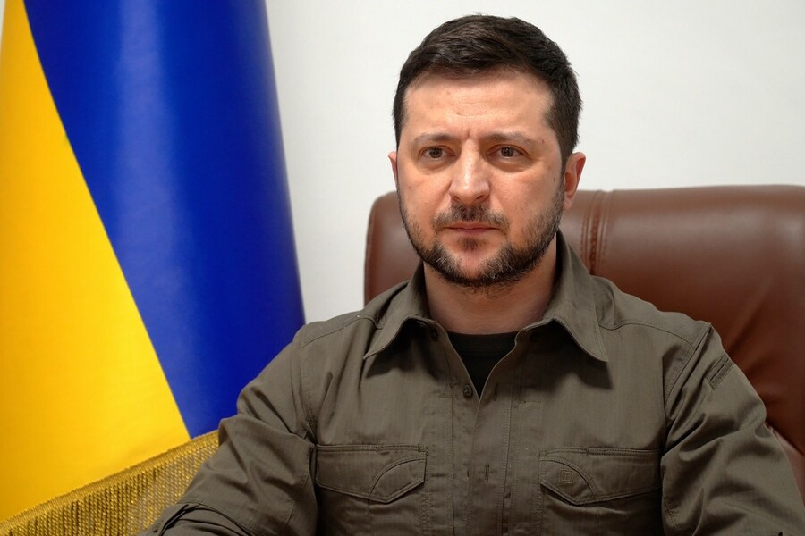
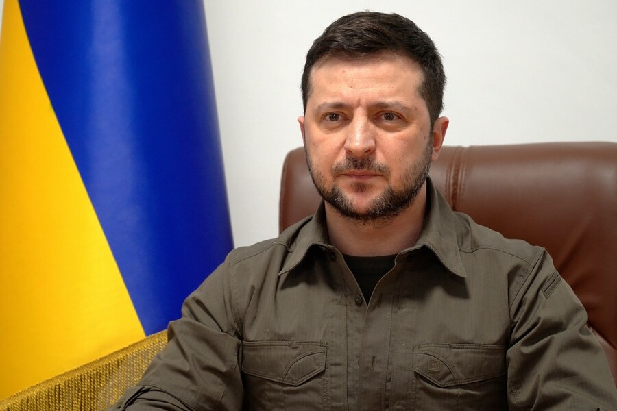

Володи́мир Олекса́ндрович Зеле́нський (нар. 25 січня 1978, Кривий Ріг) — український державний діяч, шостий і чинний Президент України з 20 травня 2019 року[⇨]. До вступу на посаду здобув популярність як шоумен, актор, комік, режисер, продюсер і сценарист. Був співвласником і художнім керівником «Студії Квартал-95» (2003—2019) та генеральним продюсером телеканалу «Інтер» (2010—2012). Політичну кар'єру розпочав 2019 року та балотувався на виборах президента України 2019 року. За підсумками голосування обраний Президентом України[⇨]. Володимир Зеленський участь у виробництві понад двох десятків кінофільмів і телесеріалів як актор (зокрема «Кохання у великому місті», «8 перших побачень», «Я, ти, він, вона»), продюсер (як-от «Свати», «Я буду поруч», «Кохання у великому місті 3»), сценарист («Свати»), а також був актором дубляжу («Хортон», «Пригоди Паддінгтона» та інші)[⇨]. історії, якого обирають Президентом України[⇨]. Перші три серії третього сезону серіалу вийшли безпосередньо перед першим туром виборів Президента України 2019, у яких Володимир Зеленський брав участь як висуванець однойменної з телесеріалом партії «Слуга народу» і здобув найбільшу голосів. Після перемоги в другому турі виборів обраний на посаду Президента України[⇨].
 
